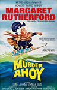

1964 - Murder Ahoy!
Murder Ahoy! was not based on any Christie's work but displays a few plot elements from They Do It With Mirrors (the ship is used as a reform school for wayward boys and one of the teachers uses them as a crime force) and there is a kind of salute to The Mousetrap.



Screen Versions
Murder Ahoy! was the last of four Miss Marple films made by Metro-Goldwyn-Mayer that starred Margaret Rutherford.
It includes an entirely tongue-in-cheek reference to The Mousetrap, the Christie play that has been running continuously on the West End since 1952. Audiences who see The Mousetrap are asked to keep the ending a secret, so it is amusing when Rutherford's Miss Marple says that she's reading a "rattling-good detective yarn" and "I hope I won't be giving too much away if I say the answer is a mousetrap!" She then notes that she'll "say no more – otherwise, I'll spoil it for you!"

1964
Miss Marple
-
Margaret Rutherford
Captain Sydney De Courcy Rhumstone
-
Lionel Jeffries
Charles Tingwell
-
Chief Insp. Craddock
Comm. Breeze-Connington
-
William Mervyn
Matron Alice Fanbraid
-
Joan Benham
Mr. Jim Stringer
-
Stringer Davis
Dr. Crump
-
Nicholas Parsons
Bishop Faulkner
-
Miles Malleson
Lord Rudkin
-
Henry Oscar
Sub-Lt. Eric Humbert
-
Derek Nimmo
Brewer (aka Lt. Commander Dimchurch)
-
Gerald Cross
Asst. Matron Shirley Boston
-
Norma Foster
Sgt. Bacon
-
Terence Edmond
Lt. Compton
-
Francis Matthews
Millie
-
Lucy Griffiths
Dusty Miller
-
Bernard Adams
Kelly, The Tramp
-
Tony Quinn
Miss Pringle
-
Edna Petrie
Directors
-
George Pollock
Screenplay
-
David Pursall & Jack Seddon